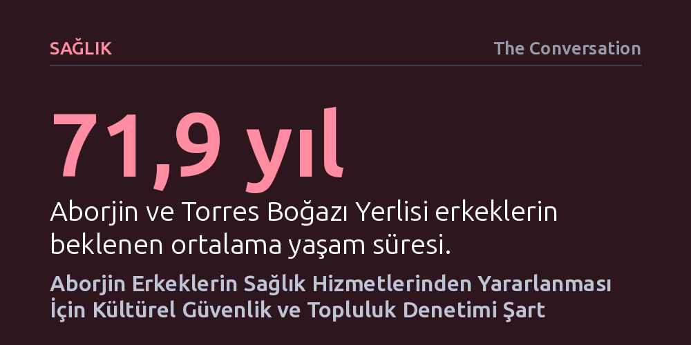

SAGLIK · The Conversation · 2026-10-26
Aborjin ve Torres Boğazı Yerlisi erkeklerin sağlık hizmetlerine katılımı, hizmetlerin yalnızca fiziksel olarak var olmasına değil; kültürel güvenlik, topluluk denetimi ve erkek odaklı yaklaşımlarla tasarlanmasına bağlıdır. Başarılı uygulamalar, ilişkileri ve güveni merkeze alan modellerin önlenebilir ölümleri azaltabildiğini kanıtlıyor.
Sağlık eşitsizliklerinin kaynağının bireylerin ilgisizliği değil, yapısal dışlanma ve kültürel güvensizlik olduğunu göstererek çözümün hizmeti yerel toplulukla birlikte tasarlamaktan geçtiğini ortaya koyuyor.

Avustralya’da Aborjin ve Torres Boğazı Yerlisi erkeklerin beklenen ortalama yaşam süresi 71,9 yıl; bu oran Yerli olmayan erkeklerin tam 8,8 yıl gerisinde. Daha da sarsıcı olanı, 75 yaş altındaki Yerli erkeklerde zamanında müdahaleyle önlenebilecek ölüm oranlarının genele kıyasla neredeyse üç kat daha yüksek seyretmesi. Bu çarpıcı tablo, sağlık sisteminde basit bir hizmet eksikliğinin çok ötesinde köklü bir eşitsizliğe işaret ediyor.
Geleneksel sağlık yaklaşımları sıklıkla bu erkekleri "ulaşılması güç" ya da kendi sağlığına kayıtsız kalabalıklar olarak yaftalıyor. Oysa yeni yayımlanan kapsamlı araştırma, sorunun erkeklerin ilgisizliğinden değil, karşılaştıkları sistemik engellerden kaynaklandığını gösteriyor. Yerli erkekler; kendilerine saygı duyulan, kültürel açıdan güvende hissettikleri ve ihtiyaçlarına yanıt veren bir ortam bulduklarında sağlık hizmetlerine aktif biçimde katılıyor.
Birinci basamak sağlık hizmetlerinin kapısını Yerli erkeklerin yüzüne kapatan etkenler sanıldığından çok daha somut ve yapısal. Uzak bölgelerde yaşayan bir erkek için en yakın sağlık kuruluşuna ulaşmak saatler süren yolculuklar ve ciddi personel kıtlığı anlamına gelirken, merkezde yaşayan bir diğeri kliniğe adım attığı anda kültürel olarak güvensiz bir atmosferle karşılaşabiliyor. Sırada beklenen uzun saatler, randevu alma süreçlerinin karmaşıklığı ve erkek sağlık çalışanı eksikliği kapıdan geri dönülmesine yol açıyor.
Üstelik geçmişte yaşanan ayrımcılık, ırkçılık veya mahremiyet ihlalleri, erkeklerde derin bir güvensizlik ve çekince yaratıyor. Daha önce rencide edici bir muameleye maruz kalmış bir birey, kliniğe ancak hastalığı dayanılmaz raddeye geldiğinde başvurmayı seçiyor. Bir sağlık merkezinin bekleme salonuna birkaç yerel sanat eseri asmak bu güvensizliği silmeye yetmiyor; çünkü "sadece bir kliniğin var olması insanların orayı kullanacağı anlamına gelmiyor."
Sistemik kilitlenmeyi aşmanın en etkili yolu, hizmetin mülkiyetini ve yönetimini doğrudan yerel topluluklara devretmekten geçiyor. Aborjin Topluluğu Denetimindeki Sağlık Kuruluşları (ACCHO), klinik bakımı sosyal destek, koruyucu hekimlik ve kültürel birikimle harmanlayarak başarısını kanıtlamış durumda. Karar mekanizmalarında topluluğun doğrudan söz sahibi olması, güvensizlik bariyerlerini hızla ortadan kaldırıyor.
Bunun somut örneği olan Enough Talk, Time for Action programı, Yerli erkeklerin kendi kurdukları destek grupları üzerinden sağlığa erişmesini sağladı. Daly River bölgesindeki Nauiyu topluluğunda erkekler sadece erkek personelin görev yaptığı gezici bir klinik talep ettiğinde, eyalet sağlık yönetimiyle iş birliği yapılarak bu istek hayata geçirildi. Yerel erkeklerin memnuniyetle karşıladığı bu esnek ve yerinde müdahaleler, hizmet onların ayağına ve onların belirlediği koşullarla gittiğinde katılımın nasıl hızla arttığını açıkça ortaya koyuyor.
Sağlık sistemlerinin başarısı artık yalnızca poliklinikten geçen hasta sayısı ya da işlenen randevu adetleriyle ölçülemez. Asıl başarı göstergesi; erkeklerin kliniğe yeniden gelmesi, sağlık çalışanlarıyla güvene dayalı sürekli bağlar kurması ve kendilerini güvende hissederek sürece dahil olmasıdır. Bu dönüşüm, hizmetlerin Yerli erkeklere tepeden inme biçimde dayatılması yerine, doğrudan onlarla birlikte tasarlanmasını zorunlu kılıyor.
Avustralya onyıllardır sağlıkta neyin işe yaradığını aramakla vakit kaybetti; oysa kanıtlar neyin işe yaradığını net biçimde gösteriyor. Çözüm, bu başarılı topluluk odaklı modelleri geçici pilot projeler veya ek fonlama kalemleri olarak sürdürmek yerine, ulusal sağlık sisteminin ana omurgasına kalıcı olarak yerleştirmektir.